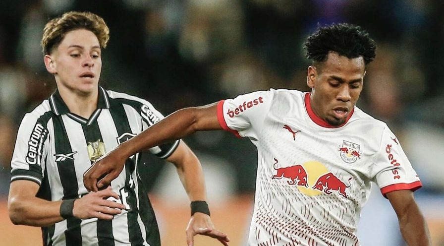
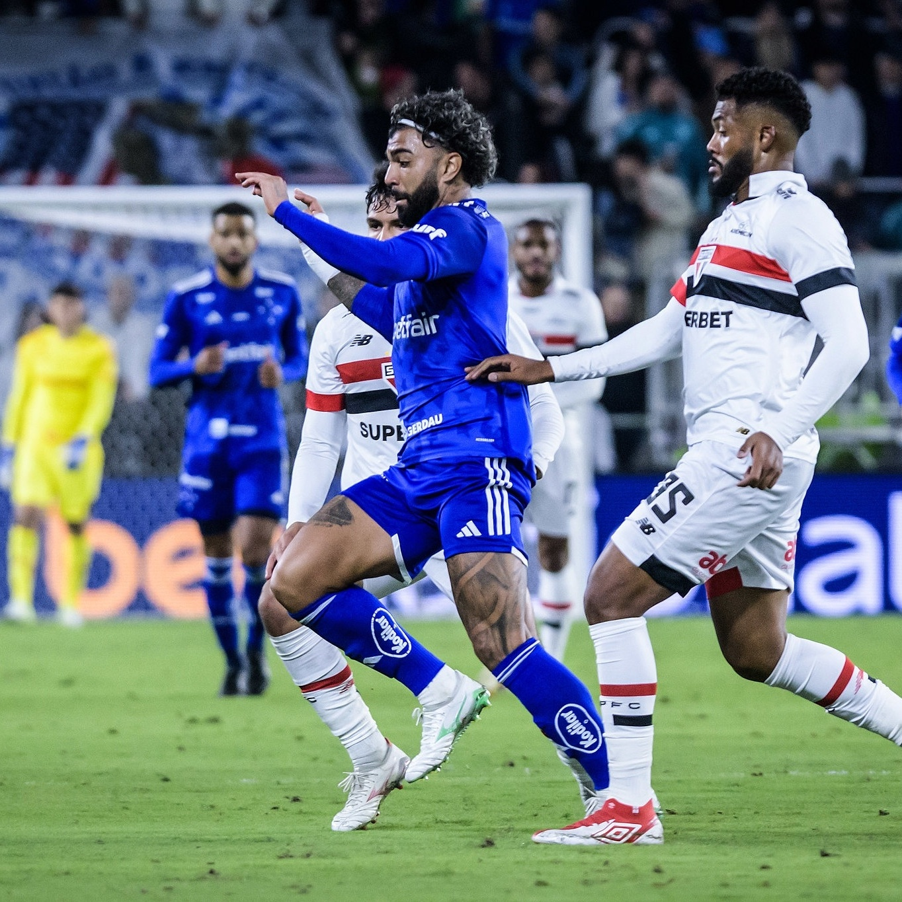
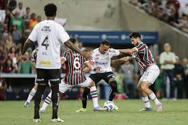
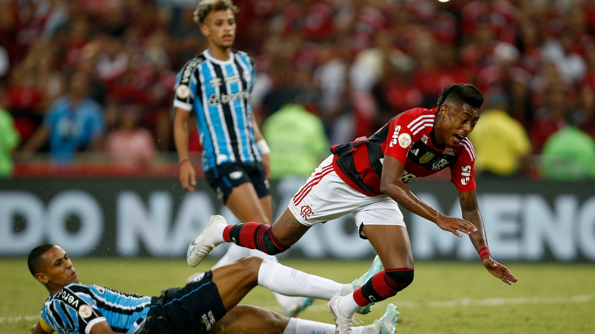
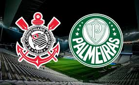
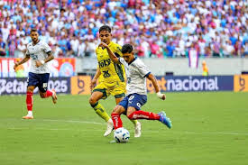
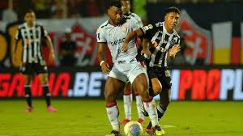
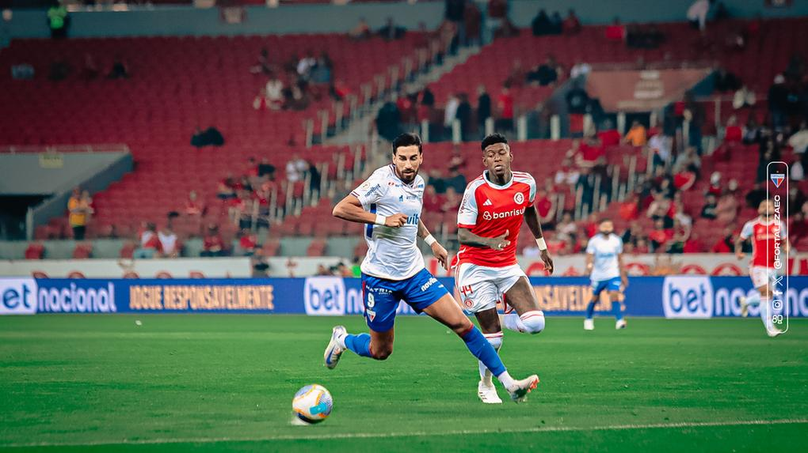
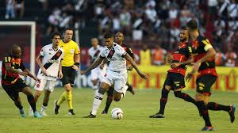

Ceará 0 x 1 Juventude
⚽ Ceará 0 x 1 Juventude – Arena Castelão
O Juventude conquistou sua primeira vitória fora de casa ao derrotar o Ceará por 1 a 0 na Arena Castelão. Esse resultado foi crucial para o Juventude, que lutava contra a zona de rebaixamento, enquanto o Ceará tentava melhorar sua posição na tabela.

Botafogo 4 x 1 RB Bragantino
⚽ Botafogo 4 x 1 Bragantino – Nilton Santos
O Botafogo demonstrou força ao vencer o Bragantino por 4 a 1 no Nilton Santos. A vitória consolidou a posição do Glorioso na parte superior da tabela, enquanto o Bragantino tentava reagir após derrotas anteriores.

Cruzeiro 1 x 0 São Paulo
⚽ Cruzeiro 1 x 0 São Paulo – Mineirão
Com mais três pontos somados, o time celeste segue firme na disputa pela liderança do Brasileirão 2025. Já o São Paulo caiu para a 7ª colocação.

Santos 0 x 0 Fluminense
⚽ Santos 0 x 0 Fluminense – Vila Belmiro
Santos e Fluminense empataram sem gols. Ambas as equipes buscavam melhorar suas posições na tabela.

Flamengo 1 x 1 Grêmio
⚽ Flamengo 1 x 1 Grêmio – Maracanã
Um dos jogos mais aguardados da rodada terminou empatado. O empate manteve o Rubro-Negro na parte superior da tabela.

Corinthians 1 x 1 Palmeiras
⚽ Corinthians 1 x 1 Palmeiras – Neo Química Arena
O clássico paulista terminou empatado em 1 a 1. Ambas as equipes buscavam a vitória para se aproximar da liderança.

Mirassol 5 x 1 Bahia
⚽ Mirassol 5 x 1 Bahia – José Maria de Campos Maia
O Mirassol aplicou uma goleada histórica no Bahia. Foi uma grande vitória que animou a torcida.

Vitória 1 x 0 Atlético-MG
⚽ Vitória 1 x 0 Atlético-MG – Barradão
Vitória importante para o time baiano na luta contra o rebaixamento.

Internacional 2 x 1 Fortaleza
⚽ Internacional 2 x 1 Fortaleza – Beira-Rio
O Internacional venceu em casa e subiu na tabela.

Sport 2 x 3 Vasco
⚽ Sport 2 x 3 Vasco – Ilha do Retiro
Em um jogo emocionante, o Vasco venceu fora de casa.